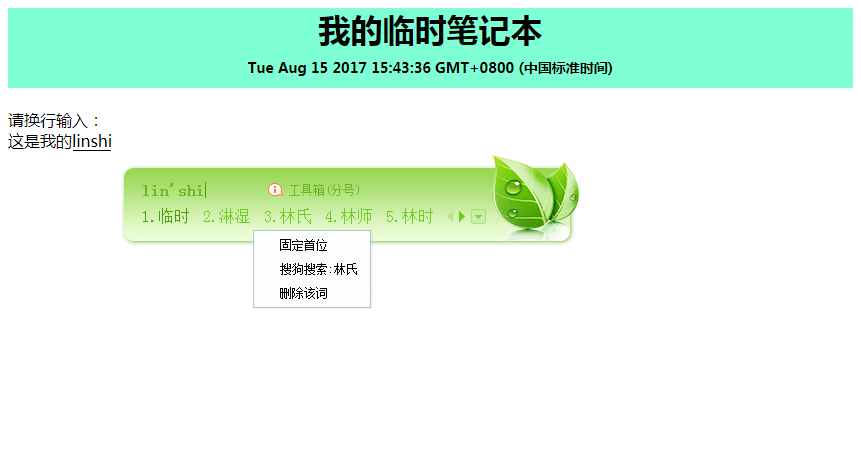

前言
日常的工作中每次需要临时记录一个东西的时候就在桌面新建一个记事本，用完以后也就忘记删除了，再下一次需要记录的时候又新建一个记事本，
久而久之的桌面上就存在一些无用的文件，对于我这种看着桌面乱糟糟心里就不自在，要是能在网页上面直接写就好了（做为程序员浏览器是一直开着的），
偶然的机会发现HTML 5 有个 contenteditable 属性，可以编辑元素的内容。
使用说明
|
|
复制上面的内容到浏览器的地址栏中，回车。

然后把这个网页加入书签中，下次使用时就直接打开书签就可以了，使用完后直接关闭掉就可以了。